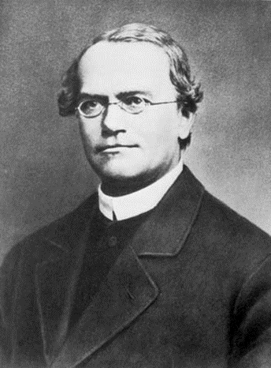

Грегор Иоганн Мендель (1822-1884) - основоположник генетики.
Первый открыл закономерности, по которым признаки передаются из поколения в поколение.
В течении многих лет проводил опыты над горохом в монастырском саду.
В 1865 г. опубликовал работу «Опыты над растительными гибридами», в которой и изложил основные
закономерности наследственности.С 1854 года в течение восьми лет Мендель проводил опыты по
скрещиванию растений гороха. Классические
эксперименты Менделя заключались в скрещивании двух линий гороха. Например, высокорослой и
низкорослой.
Все дочерние растения первого поколения были высокими (а вовсе не низкого или среднего роста,
как
ожидалось).
Однако при последующем скрещивании растений первого поколения между собой только три четверти
дочерних растений второго поколения оказались высокорослыми, оставшиеся растения были
низкорослыми.
Им было выявлено, что в результате скрещивания различных сортов гороха друг с другом гибриды
первого
поколения обладают одинаковым фенотипом, а у гибридов второго поколения имеет место расщепление
признаков в определенных соотношениях...